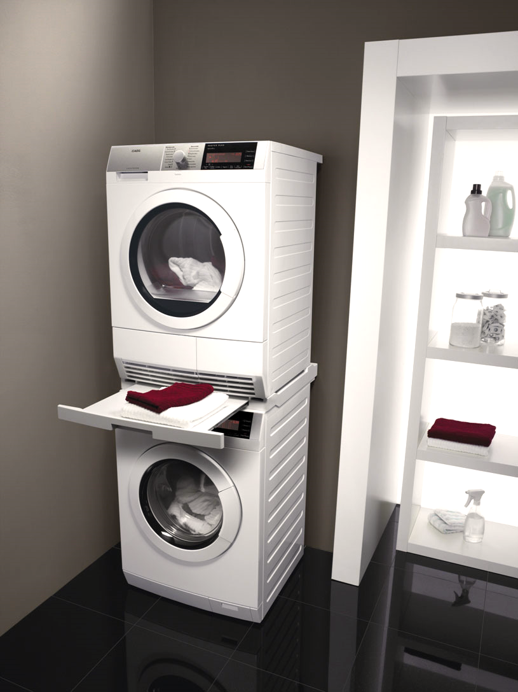
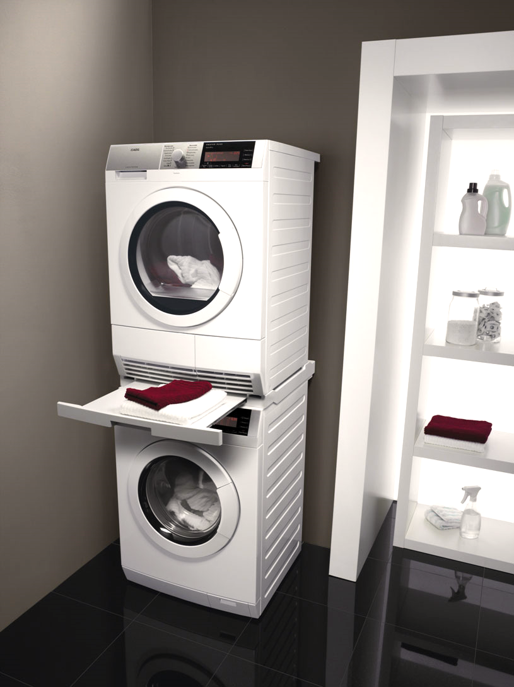
 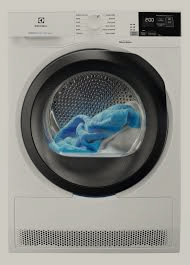
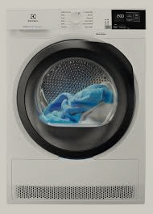
 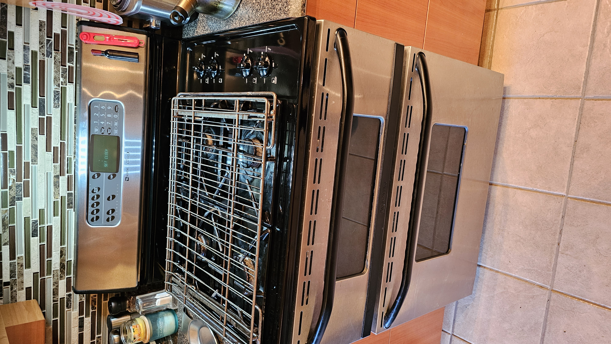
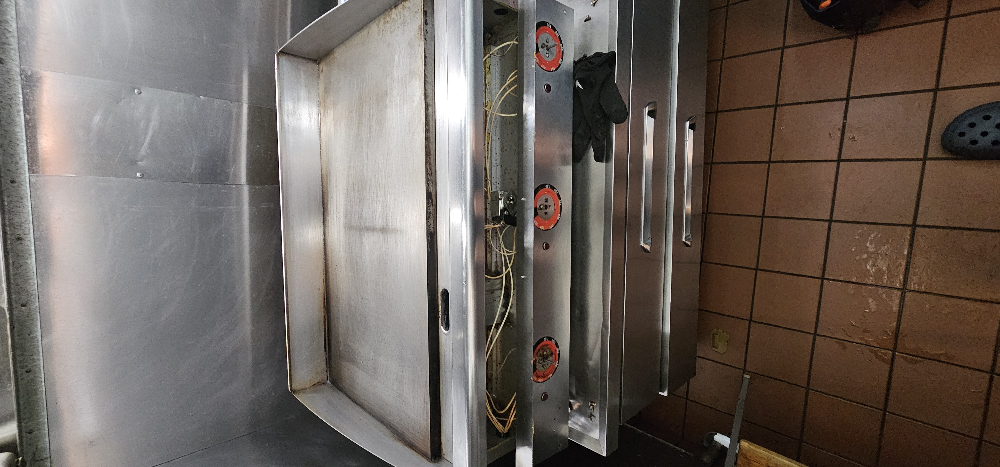
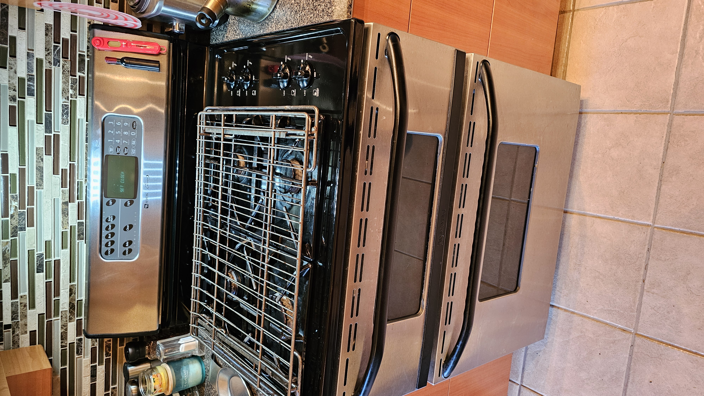
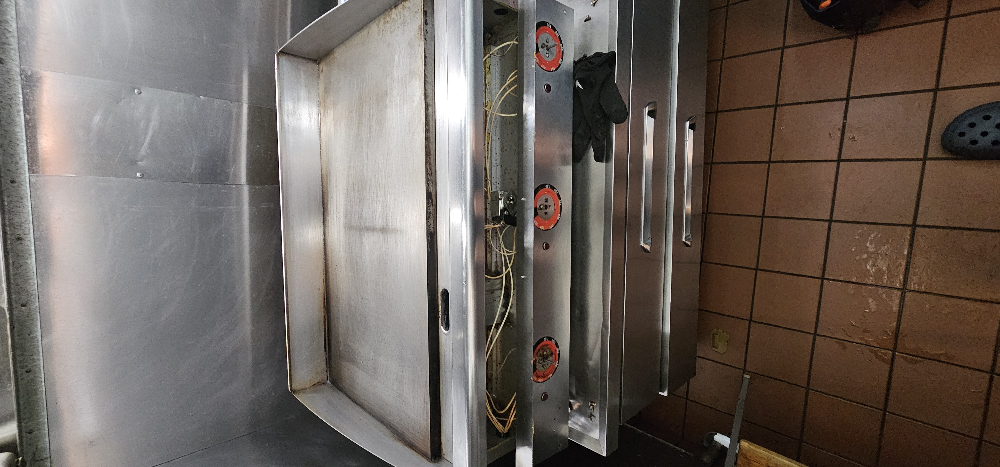
If you are looking for reliable washing machine repair services in Vancouver, we are here to help. Our team of skilled professionals specializes in repairing all brands and models of washing machines. Whether it's a minor issue or a major malfunction, we can fix it quickly and efficiently, ensuring your machine is back to working order as soon as possible.
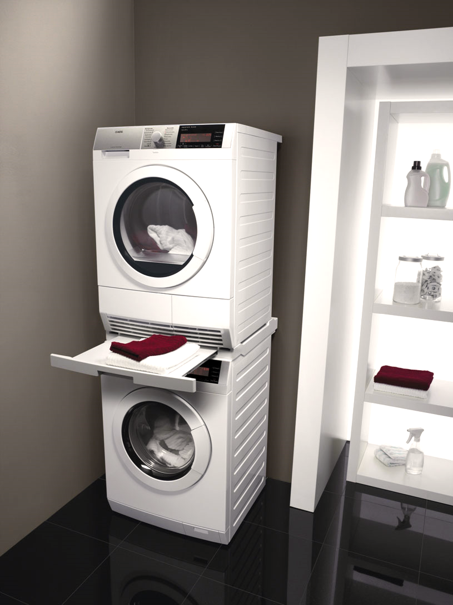
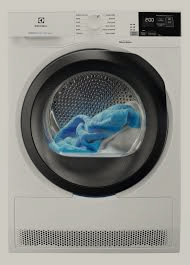
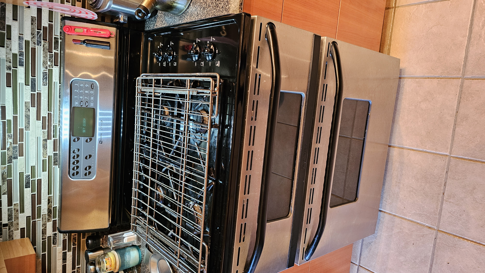
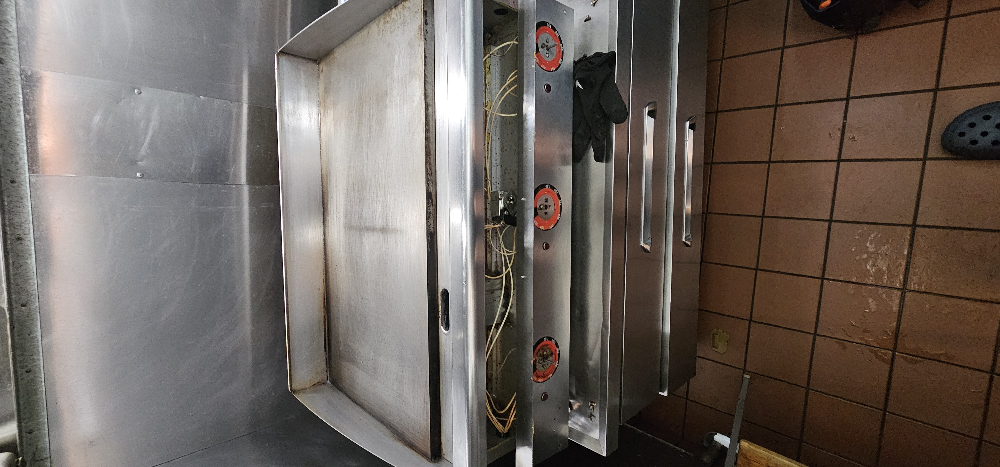
Our washing machine repair service in Vancouver is trusted by many customers for several reasons. First and foremost, we offer fast, affordable, and professional repair services. Whether you have a front-loading or top-loading washing machine, we have the skills and experience to fix it. We handle all types of issues, from simple repairs to complex electrical and mechanical problems. Our team uses only high-quality parts for replacements, ensuring your washing machine will function like new after the repair.
Our services are available for both residential and commercial customers. We understand how important it is to have a working washing machine, so we strive to offer quick turnaround times for repairs. In most cases, we can complete repairs on the same day or the next day, depending on the severity of the issue and part availability. Plus, we offer competitive rates, ensuring that our services are affordable for everyone.
We also offer a satisfaction guarantee on all our services, so you can rest assured that your washing machine is in good hands. If you experience any issues after our repairs, we will address them at no extra cost.
In Vancouver and across Canada, many different brands of washing machines are popular. Our washing machine repair service specializes in all these brands, including both newer models and older machines. Here are some of the most popular washing machine brands that we repair:
We provide a wide range of washing machine repair services in Vancouver, ensuring that your appliance is always in excellent working condition. Our services include:
We also offer washing machine installation services for new units, helping you set up your appliance and ensuring it’s working perfectly from the start. Whether it's a new purchase or a replacement, we can help you get your washing machine running efficiently.
When it comes to washing machine repair in Vancouver, we are the go-to experts. Here are a few reasons why you should choose our service:
If you need reliable and affordable washing machine repair in Vancouver, get in touch with us today. We’ll help you get your washing machine fixed as quickly as possible!
Address: Vancouver, British Columbia, Canada

Sometimes the dryer may stop heating, or does not dry clothes at all. The first thing you can do is turn off the dryer, and then ...

The Whirlpool dryer heats but does not dry - this does not happen often, but it happens if you use the dryer sometimes. What to do when this situation occurs...
If the dryer is not level, it can vibrate excessively during operation and make noise. Foreign objects inside the dryer, such as winter shoes or slippers, can make loud noises...